INSTINTO SUPERIOR

EXPLORANDO OS MISTÉRIOS DO COSMOS
EXPLORANDO OS MISTÉRIOS DO COSMOS
A Astrologia Tropical é o sistema que alinha o zodíaco com as estações do ano no hemisfério norte. Ela foca no desenvolvimento psicológico e na jornada do herói, mapeando como as energias celestes moldam o "Instinto Superior" de cada indivíduo através da posição do Sol, da Lua e do Ascendente no momento do nascimento.
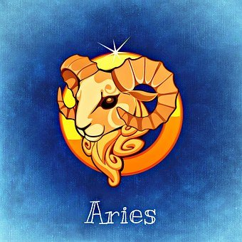
O Sol em Áries representa a essência pura da iniciativa e da coragem. É o "Eu Sou" em sua forma mais primitiva e poderosa, movido pelo desejo de conquistar e liderar. Quem possui este Sol brilha através da ação direta, da honestidade brutal e de um entusiasmo contagiante que impulsiona todos ao redor. É uma energia de pioneirismo, que não teme o desconhecido e busca constantemente novos desafios para provar seu valor. A identidade ariana é forjada no fogo da batalha e na busca incansável pela vitória e reconhecimento individual.
Ter a Lua em Áries significa que as emoções são processadas de forma rápida, intensa e muitas vezes impetuosa. Existe uma necessidade visceral de independência emocional e uma reatividade imediata a qualquer percepção de injustiça ou controle. A segurança para estas pessoas vem da capacidade de lutar por seus sentimentos e de manter sua autonomia preservada. É uma Lua que não guarda mágoas por muito tempo, mas que explode com facilidade, preferindo a clareza de um confronto direto à passividade de sentimentos reprimidos e ocultos.
O Ascendente em Áries confere uma presença física marcante e uma atitude de "primeiro a chegar". A pessoa aborda o mundo com pressa, energia e uma disposição natural para enfrentar a vida de frente. Transmite uma imagem de autossuficiência, força e determinação, sendo percebida como alguém que sabe exatamente o que quer. É a máscara do guerreiro pronto para a ação, que muitas vezes age antes de pensar, guiado por um instinto aguçado que o coloca sempre à frente de seu tempo em qualquer projeto que inicie.
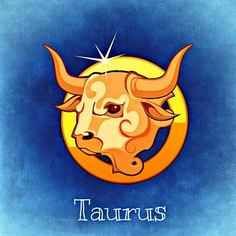
O Sol em Touro ilumina a busca por estabilidade, segurança e prazeres sensoriais. É a energia da preservação e da construção lenta e sólida, onde o valor das coisas é medido por sua durabilidade e utilidade. O taurino brilha ao manifestar beleza e conforto no mundo físico, sendo um mestre da persistência e da paciência. Sua essência é pragmática e realista, conectada profundamente com a natureza e com o ritmo orgânico da vida. É o signo que sustenta o que foi iniciado, garantindo que os recursos sejam bem aproveitados e valorizados.
A Lua em Touro busca segurança emocional através da previsibilidade e do conforto material. As emoções são estáveis, profundas e resistentes a mudanças bruscas, conferindo uma natureza acolhedora e constante. Quem possui esta Lua sente-se seguro quando cercado de beleza, boa comida e estabilidade financeira. Existe uma grande capacidade de nutrir e sustentar o ambiente familiar, mas também uma tendência à teimosia e ao apego excessivo a situações conhecidas, mesmo quando estas já não servem mais ao crescimento pessoal e espiritual.
O Ascendente em Touro projeta uma imagem de calma, elegância e confiabilidade. A abordagem inicial da vida é cautelosa, preferindo observar os arredores antes de dar o primeiro passo com segurança. As pessoas com este ascendente costumam ter um ritmo mais lento, mas extremamente produtivo, transmitindo uma sensação de paz para quem as rodeia. O mundo é visto como um campo de recursos a serem cultivados, e a estética pessoal geralmente reflete um gosto apurado pela qualidade e pelo que é clássico e atemporal no mundo.
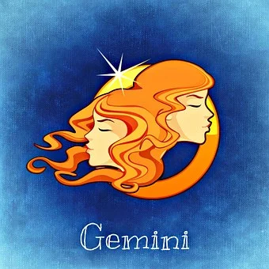
O Sol em Gêmeos ilumina a mente curiosa e a versatilidade. É a essência do eterno aprendiz que vê o mundo como uma rede infinita de informações e conexões. Quem possui este Sol brilha através da comunicação, da agilidade mental e da capacidade de se adaptar a qualquer ambiente social com facilidade. Sua identidade é construída na troca de ideias e na busca por novidades, mantendo sempre um espírito jovem e inquieto que detesta a monotonia e a estagnação intelectual.
A Lua em Gêmeos racionaliza as emoções, sentindo a necessidade de verbalizar o que se passa no interior para compreender seus sentimentos. A segurança emocional vem do movimento e do estímulo intelectual constante. São pessoas que precisam de variedade e conversa para se sentirem em paz, podendo ficar ansiosas em ambientes silenciosos ou isolados. É uma Lua leve, que busca leveza nas relações e tem uma habilidade incrível de ver o lado lógico e bem-humorado mesmo nas situações mais difíceis.
O Ascendente em Gêmeos projeta uma imagem de alguém comunicativo, alerta e extremamente expressivo. A primeira impressão é de uma pessoa inteligente e jovial, que gesticula muito e parece estar sempre atenta a tudo o que acontece ao redor. A abordagem da vida é mediada pela curiosidade; o mundo é um lugar para ser explorado através da pergunta e do diálogo. Transmite uma vibração de rapidez e flexibilidade, sendo percebido como alguém que tem sempre uma resposta pronta ou uma nova informação para compartilhar.
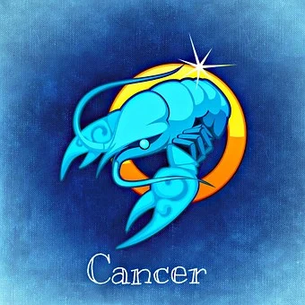
O Sol em Câncer brilha através da sensibilidade, da nutrição e da proteção. É a essência da alma cuidadora, que encontra força na vulnerabilidade e na conexão profunda com as raízes e a família. O canceriano possui uma intuição aguçada e uma memória emocional poderosa, agindo como um guardião das memórias e dos afetos. Sua identidade é voltada para a criação de laços seguros e para a defesa daqueles que ama, brilhando quando pode oferecer suporte emocional e acolhimento em um mundo muitas vezes frio.
A Lua em Câncer está em seu domicílio, tornando as emoções extremamente profundas, cíclicas e intuitivas. A segurança emocional está ligada ao lar, à sensação de pertencimento e ao cuidado mútuo. Quem tem esta Lua possui uma empatia natural e sente as variações do ambiente com intensidade física. É uma energia de "mãe arquetípica", que protege seu mundo interior com uma carapaça rígida, mas transborda doçura e lealdade absoluta para os poucos que ganham sua confiança e entram em seu santuário.
O Ascendente em Câncer transmite uma imagem de suavidade, receptividade e acolhimento inicial. A abordagem da vida é cautelosa e defensiva, preferindo "sentir o terreno" antes de se expor totalmente. As pessoas costumam se sentir confortáveis e seguras perto de quem tem este ascendente, pois eles projetam uma aura de cuidado e proteção. Fisicamente, pode haver traços mais arredondados e um olhar expressivo. O mundo é percebido como um lugar onde as emoções ditam o ritmo, e a preservação da paz interior é a prioridade.
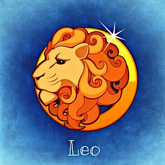
O Sol em Leão representa a máxima expressão da individualidade, da criatividade e do magnetismo pessoal. É a energia do rei, que brilha com generosidade e busca ser o centro do próprio universo. O leonino encontra sua essência na autoconfiança, na lealdade e na capacidade de inspirar os outros através de sua luz própria. Sua identidade é solar, vibrante e necessita de reconhecimento; ele não apenas vive, ele performa a vida com paixão, buscando deixar um legado de beleza e dignidade por onde passa.
A Lua em Leão traz uma necessidade emocional de ser admirado, amado e validado. As emoções são nobres, dramáticas e coloridas por um forte senso de orgulho. A segurança emocional vem da capacidade de se expressar criativamente e de sentir que seu brilho interior é notado por aqueles que o cercam. Existe uma generosidade enorme no coração de quem tem esta Lua, mas também uma vulnerabilidade escondida sob a máscara da força; o afeto aqui é um palco onde o amor deve ser celebrado com grandiosidade.
O Ascendente em Leão confere uma presença majestosa e uma aura de autoridade natural. A pessoa entra nos lugares e é notada, transmitindo uma imagem de vitalidade, coragem e estilo pessoal único. A abordagem da vida é confiante e entusiasmada, tratando cada situação como uma oportunidade de mostrar sua competência e carisma. É a máscara do herói solar, que encara os desafios de cabeça erguida. O mundo é visto como um palco onde a autenticidade é a maior virtude, atraindo os outros através de um calor humano genuíno.
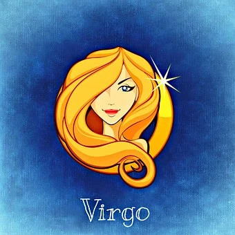
O Sol em Virgem ilumina a busca pela perfeição, pelo discernimento e pela utilidade prática. É a essência do artesão e do analista, que encontra propósito em organizar o caos e em servir ao mundo com precisão. O virginiano brilha através do trabalho bem feito, da atenção aos detalhes e de uma inteligência voltada para a melhoria constante de si e do ambiente ao redor. Sua identidade é modesta, dedicada e focada na eficiência, acreditando que o amor e a luz se manifestam nos pequenos gestos de cuidado e na integridade do dia a dia.
A Lua em Virgem traz uma necessidade emocional de ordem, limpeza e rotina funcional. As emoções são processadas de forma analítica, buscando entender a mecânica dos sentimentos para manter o controle. A segurança emocional vem da sensação de ser útil e de ter a vida sob controle; o caos externo gera ansiedade interna imediata. É uma Lua que demonstra afeto através do serviço prático — ajudando a resolver problemas, cuidando da saúde e garantindo que tudo funcione perfeitamente para aqueles que ama.
O Ascendente em Virgem projeta uma imagem de alguém discreto, inteligente e muito observador. A primeira impressão é de uma pessoa polida, cuidadosa com a aparência e com uma mente afiada que capta as falhas do ambiente instantaneamente. A abordagem da vida é metódica e realista; o mundo é visto como um lugar que sempre pode ser aprimorado através do esforço e da análise técnica. Transmite uma sensação de competência silenciosa, sendo percebido como alguém confiável para realizar tarefas que exigem foco e critério rigoroso.
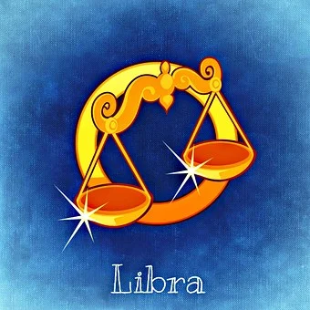
O Sol em Libra brilha através da harmonia, da justiça e do equilíbrio nas relações humanas. É a essência do diplomata e do esteta, que busca a beleza e a paz em todas as suas formas. O libriano encontra sua identidade no espelhamento com o outro, valorizando a cooperação e o consenso acima do conflito individualista. Sua luz se manifesta na capacidade de ver todos os lados de uma questão e na busca por uma convivência refinada e justa, onde a estética e a ética caminham juntas para criar um mundo mais equilibrado.
A Lua em Libra traz uma necessidade profunda de parceria e harmonia ambiental para o equilíbrio emocional. As emoções são mediadas pela necessidade de aceitação e pelo horror ao conflito direto ou à grosseria. A segurança emocional vem de estar em um relacionamento estável e de viver em um ambiente esteticamente agradável. Quem possui esta Lua busca equilibrar seus sentimentos através do diálogo e da conciliação, sentindo-se emocionalmente nutrido quando consegue promover a paz e a justiça ao seu redor e nas vidas alheias.
O Ascendente em Libra confere uma imagem de charme, gentileza e elegância natural. A pessoa aborda o mundo com uma atitude conciliadora e sociável, buscando sempre causar uma boa impressão e evitar atritos desnecessários. Transmite uma aura de equilíbrio e bom gosto, sendo frequentemente percebida como alguém muito atraente e diplomático. O mundo é visto como um palco de interações sociais onde a etiqueta e a consideração pelo próximo são as chaves para abrir portas e conquistar o que se deseja com suavidade e classe.
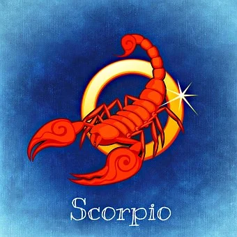
O Sol em Escorpião ilumina as profundezas da psique, o poder da transformação e a intensidade emocional. É a essência do fênix, que encontra força na superação de crises e na exploração do que está oculto sob a superfície. O escorpiano brilha através da paixão, da lealdade inabalável e de uma vontade de ferro que não aceita superficialidades. Sua identidade é magnética e misteriosa, focada na verdade visceral e na capacidade de se regenerar totalmente após cada desafio, buscando sempre a evolução através da morte simbólica e do renascimento.
A Lua em Escorpião vive as emoções com uma intensidade vulcânica e uma profundidade que poucos conseguem atingir. Existe uma necessidade de fusão emocional completa e uma busca incessante pela verdade nos sentimentos, detestando qualquer forma de falsidade. A segurança emocional vem da intimidade profunda e do controle sobre seu ambiente privado. É uma Lua intuitiva e psíquica, que sente as intenções alheias antes mesmo que sejam ditas, protegendo seu coração com uma vigilância silenciosa até que a confiança total seja estabelecida.
O Ascendente em Escorpião projeta uma imagem de mistério, poder silencioso e um olhar penetrante que parece ver através das pessoas. A abordagem da vida é cautelosa, estratégica e intensamente focada, transmitindo uma aura de alguém que não deve ser subestimado. A primeira impressão é de uma pessoa reservada e magnética, que mantém suas cartas próximas ao peito. O mundo é percebido como um lugar de forças ocultas e desafios psicológicos, onde a percepção afiada e a resiliência são as ferramentas essenciais para a sobrevivência e o triunfo final.
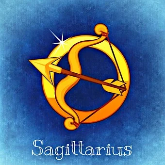
O Sol em Sagitário brilha através da busca pela verdade, pela expansão e pelo significado maior da existência. É a essência do explorador e do filósofo, que encontra vida na liberdade, na aventura e no otimismo inabalável. O sagitariano possui uma fé natural no futuro e uma sede insaciável por conhecimento, seja ele geográfico ou intelectual. Sua identidade é construída na ampliação de horizontes, brilhando quando pode compartilhar sabedoria, rir das adversidades e apontar sua flecha para objetivos distantes e ideais elevados que transcendem o cotidiano.
A Lua em Sagitário traz uma necessidade emocional de liberdade e crescimento pessoal contínuo. As emoções são leves, entusiásticas e muitas vezes idealistas, buscando sempre o lado positivo das situações. A segurança emocional vem da sensação de que o mundo é vasto e cheio de possibilidades, sentindo-se sufocado por rotinas rígidas ou dramas emocionais excessivamente pesados. É uma Lua que encontra conforto na viagem, no estudo e na crença de que tudo ficará bem, nutrindo os outros com esperança e uma visão ampla da vida e do destino.
O Ascendente em Sagitário projeta uma imagem de alguém amigável, direto e cheio de energia vital. A primeira impressão é de uma pessoa bem-humorada, franca e com uma postura física aberta e expansiva. A abordagem da vida é aventureira e cheia de entusiasmo; o mundo é visto como um grande campo de jogos a ser explorado com coragem e curiosidade. Transmite uma vibração de honestidade e espírito livre, sendo percebido como alguém que traz novas perspectivas e que não tem medo de arriscar em busca de algo maior e mais significativo.
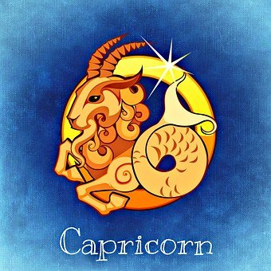
O Sol em Capricórnio ilumina a ambição, a disciplina e a construção de estruturas duradouras. É a essência do mestre e do realizador, que entende que o verdadeiro sucesso vem do esforço paciente e do respeito ao tempo. O capricorniano brilha ao assumir responsabilidades, ao subir a montanha do destino com persistência e ao manifestar integridade em suas ações. Sua identidade é ligada ao legado e à autoridade, buscando ser uma rocha de estabilidade e um exemplo de competência, acreditando que a realização pessoal está intrinsecamente ligada ao trabalho e ao dever cumprido.
A Lua em Capricórnio busca segurança emocional através da realização, do status e da ordem prática da vida. As emoções são contidas, sérias e voltadas para o longo prazo, muitas vezes ocultas sob uma fachada de autossuficiência e frieza. A segurança para estas pessoas vem de ter um plano sólido para o futuro e de sentir que são respeitadas por sua força e maturidade. É uma Lua resiliente, que cuida daqueles que ama garantindo estabilidade e proteção material, demonstrando afeto através do comprometimento silencioso e da presença constante nos momentos difíceis.
O Ascendente em Capricórnio confere uma imagem de seriedade, profissionalismo e maturidade precoce. A pessoa aborda o mundo de forma reservada e estratégica, transmitindo uma aura de alguém que sabe onde quer chegar e quais passos deve seguir. A primeira impressão é de alguém confiável, sóbrio e talvez um pouco distante, mas extremamente competente. O mundo é percebido como uma estrutura hierárquica onde o respeito é conquistado através do mérito e da persistência. Transmite segurança e estabilidade, sendo alguém que assume as rédeas da situação com calma e autoridade.
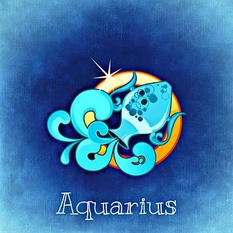
O Sol em Aquário brilha através da originalidade, do pensamento progressista e da consciência social. É a essência do visionário e do rebelde com causa, que busca quebrar padrões obsoletos para criar um futuro mais justo e inovador. O aquariano encontra sua identidade na liberdade intelectual e na conexão com o coletivo, valorizando a amizade e a autenticidade acima de tudo. Sua luz se manifesta na capacidade de pensar fora da caixa, de abraçar o diferente e de agir como um catalisador de mudanças, brilhando quando pode ser verdadeiramente único e independente em suas convicções.
A Lua em Aquário traz uma necessidade emocional de espaço, independência e conexão com ideais humanitários. As emoções são processadas de forma desapegada e racional, buscando compreender os sentimentos sob uma perspectiva universal. A segurança emocional vem da liberdade de ser quem é sem julgamentos e de pertencer a um grupo de mentes afins. Quem possui esta Lua busca nutrir o mundo com ideias novas, sentindo-se emocionalmente satisfeito quando consegue contribuir para o bem maior da sociedade, mantendo sempre um olhar voltado para o futuro e para o progresso coletivo.
O Ascendente em Aquário projeta uma imagem de alguém eclético, interessante e levemente excêntrico. A primeira impressão é de uma pessoa amigável mas impessoal, com uma mente rápida e um estilo de vida que foge do comum. A abordagem da vida é mediada pela lógica e pela curiosidade tecnológica ou social; o mundo é visto como um laboratório de experiências onde a norma é ser questionada. Transmite uma vibração de inteligência vanguardista, sendo percebido como alguém que está sempre um passo à frente de seu tempo e que valoriza a igualdade e a liberdade em todas as interações.
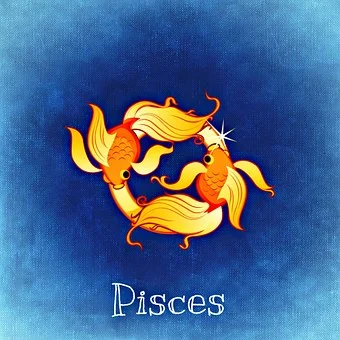
O Sol em Peixes ilumina a compaixão, a espiritualidade e a dissolução das fronteiras entre o eu e o universo. É a essência do místico e do artista, que encontra força na empatia profunda e na imaginação sem limites. O pisciano brilha através da entrega, da intuição e da capacidade de sentir a dor e a alegria do mundo como se fossem suas. Sua identidade é fluida e sensível, conectada ao inconsciente coletivo e às dimensões invisíveis da existência, buscando a união sagrada com o todo e manifestando uma luz de cura e aceitação incondicional por onde passa.
A Lua em Peixes vive em um oceano de emoções mutáveis, sonhos e percepções psíquicas. Existe uma necessidade emocional de transcendência e de momentos de isolamento para processar a enorme carga de sentimentos que absorve do ambiente. A segurança emocional vem da conexão com o divino, com a arte ou com a natureza, onde o coração pode se expandir sem medo. É uma Lua de sacrifício e amor romântico, que nutre os outros com uma compreensão silenciosa e uma ternura que ultrapassa as palavras, agindo como um refúgio de paz em tempos de tormenta.
O Ascendente em Peixes confere uma imagem de suavidade, mistério e uma certa aura de "fora deste mundo". A pessoa aborda a vida com uma atitude receptiva, sonhadora e muitas vezes camaleônica, adaptando-se às energias ao seu redor sem esforço. A primeira impressão é de alguém sensível, gentil e com um olhar profundo e nostálgico. O mundo é percebido como um lugar de conexões sutis e mistérios a serem sentidos em vez de explicados. Transmite uma vibração de compaixão e fluidez, sendo percebido como alguém que possui uma sabedoria antiga e uma alma infinitamente vasta.